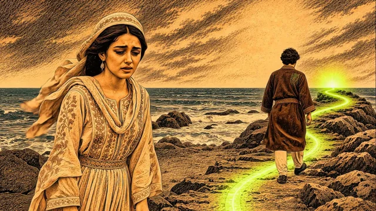

1-davom — video, 16:9 (yotiq), 8 s

Nima bo'ladi
«Men muhabbat deb o'yladim, nafsim ekan istagim… Aybni dunyodan izlab…» — u Zeboni qoldirib ketadi; oyog'i ostidagi yashil yo'l oltin tangalarga aylanadi, to'ni qimmat zarbof bo'ladi, soyasi qizil neon bilan kattalashadi. Zebo ortda xiralashadi.
KameraSekin kuzatib boruvchi kamera (tracking) orqasidan
Horizontal 16:9 video, 8 seconds, from the attached image (this image is the first frame). Slow tracking shot following the man from behind as he keeps walking away along the path, never turning back. With every step the glowing green path under his feet turns into a road of shiny gold coins; his plain brown robe slowly becomes a heavy gold-embroidered rich robe with a fur collar; his shadow on the ground grows longer and darker with a soft neon red glow inside it. On the left the girl stays standing where she is, crying, and slowly fades into the sepia background. Gold coins clink and roll under his boots. Keep exactly the same look as the attached image for the whole clip: a detailed engraved ink etching on warm sepia-gold paper with fine cross-hatching, dramatic swirling sky, the glowing neon green path; it never turns into a photo, 3D render or a different style, and the camera never cuts to a new scene. There is never any ring or circle of light above or behind anyone's head. Keep every person exactly as in the image: the same face, curly or grey hair, beard, the same brown embroidered robe; faces never change into other people. Silent video: no audio, no voices, no music; nobody speaks. Negative: no text, no letters, no numbers, no subtitles, no captions, no logos, no brand names, no watermarks, no extra people, no extra hands, no ring above any head, no circle of light behind any head